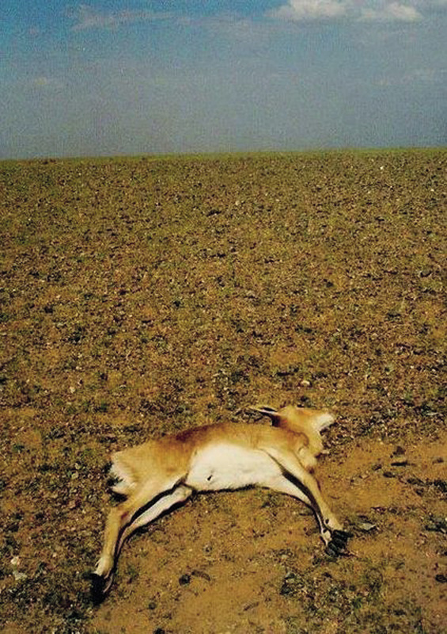

Emergency situations
In this chapter, you will learn about emergency situations and the effects they have on people. People are sometimes forced to leave their homes because of emergencies. They then become refugees. You will learn how sheltered, safe areas are created for refugees and how aid workers provide food and water.

Figure 1: This family of refugees were forced to leave their home and now need a safe placeto live until they can return.

Figure 2: Devastating fires are just one form of emergency situation that communities might have to face.
Situations that cause people to become refugees
Emergency situations can cause large numbers of people to be forced from their homes. Emergencies not only affect people in areas where a disaster took place, but also the people in the area where the refugees are moved to. People need shelter, water and food. A refugee camp has to be set up, and the camp needs to be very well planned.
In emergencies, plans to help refugees need to bemade very quickly to prevent further suffering. Twotypes of emergency situations that force people to leave their homes are war and natural disasters.
In this lesson, you will learn about emergency situations and investigate ways to help refugees.
Refugees: People who are forced to leave their homes during a disaster or in an emergency situation. Sometimes, refugees move to a safe area that is close by, and at other times, they have to travel to another country.
War
Since the beginning of time, there have been wars between people all over the world. And while armies fight battles, people are forced to flee from their towns and villages. Over the centuries, many people have ended up as refugees. Even today, there are more than 3,8 million refugees all over Africa. These people have been chased from their homes because of wars.
Figure 3: This refugee camp was set up for Rwandans during the war in their country in 1994.
Natural disasters
Natural disasters are caused by nature and not by people. Floods, wildfires, earthquakes, and volcanic eruptions are all natural disasters. All of them can force people to leave their homes.

Figure 4: This satellite picture of the disaster area in Mozambique was taken before the flood.

Figure 5: This satellite picture of the disaster area in Mozambique was taken during the flood.
Natural disasters usually happen with no warning. They can create emergencies very quickly, which means that people have to move to safer areas immediately.
In 2000, a terrible flood hit Mozambique and destroyed huge areas of farming land. Thousands of people lost their farms and were forced to flee to dry ground. Refugee camps were set up in other parts of Mozambique and also in South Africa.
Compare the pictures on the right. These pictures were taken from a satellite in space. They show the same area in Mozambique before and during the flood, and how much land was flooded.
A natural disaster can also happen over a longer period of time. In Africa, we rely on rain to water our crops. But this continent often has droughts. Droughts can create emergencies for farmers. During long droughts, large groups of people can be forced to leave their homes and their farms. These people then look for food, water and shelter, and they become refugees.

Figure 6: Droughts in Africa cause the destruction of habitats and the death of wildlife.
Initial problems facing refugees
Disasters such as floods and wars happen suddenly, which means that people have to leave their homes quickly. These refugees will not have a lot of food and water with them. They will also not have tools or materials to build shelters.
Emergencies that happen more slowly over longer periods of time include droughts, or long wars. Refugees in situations like these have a bit more time to pack up their possessions and plan their journey.
The type of emergency situation influences the mix of people in a refugee camp. Sometimes, there will be more men than women. Other times, there will be many babies who are not able to walk yet and small children. And at other times, there will be many elderly people who need special help and care.
Mix of people: The different types of people in a group, such as the young and the old, male and female and disabled people.
For example, during a war, there are usually fewer men at home, because the men will be fighting. And during a drought, babies and elderly people may die since they are more vulnerable.
Different people have different needs for food, water and shelter. Children become dehydrated more quickly than adults and they also need more high-energy foods. Old people need more warmth and blankets.
Questions for you to answer
1. Which emergencies happen suddenly, without warning?
2. How will these sudden emergencies affect each of the following:
(a) the mix of people in the group?
(b) the amount of food and water refugees have with them?
(c) the ability of refugees to build their own shelters?
3. Which emergencies happen slowly, over a longer period of time?
4. How will these slower emergencies affect:
(a) The mix of refugees in the group?
(b) how much food and water will they have with them?
(c) whether they can build their own shelters or not?
5. Which emergencies are the most difficult to plan for? Explain why you say so.
6. Which emergencies are easier to plan for? Explain why you say so.
Refugees in a foreign land
When refugees arrive at a refugee camp, they need many things, such as food, clean water and shelter. These basic needs have to be supplied by the rescue workers who are setting up the refugee camp.
In the following exercise, you will look at the experiences of people on either side of a refugee situation: refugees and the rescue and aid workers who are helping them.
Situation: refugees in a foreign land
Discuss the situation below in groups of three or four before answering the questions yourself. Your answers should be short paragraphs.
A sudden war has broken out between two small countries in central Africa and a large number of people had to flee to a neighbouring country. Imagine what it must be like to be one of the refugees, and also what the situation would be like for the host nation.
Host: A person who gives food, water and shelter to another person. A host nation is a country that helps refugees from another country.
1. What do you think the mix of people in the group is like? Remember this is a war situation, and people had to flee from their country. Think about the ages of the refugees and write down which groups will need the most care and attention.
2. What are their needs for shelter? Remember that they have not brought many possessions with them. Who will provide the shelters or the materials needed to build them?
3. What food and supplies do the refugees need? Remember that the refugees have been travelling on foot for long periods of time. Think about the ages of the people. Will some of them need more food and water than others, and if so, why? Will some people have special needs, and if so, why?
Next week
One of the biggest problems facing refugee camps is to provide enough nutritious food. Nutritious food provides all the nutrients your body needs to stay healthy.
Think about these questions to prepare for next week's lesson:
- Which foods are the easiest to find in your area?
- Which foods are the cheapest to buy in your area?
- Which foods would you choose to feed a large camp of refugees?